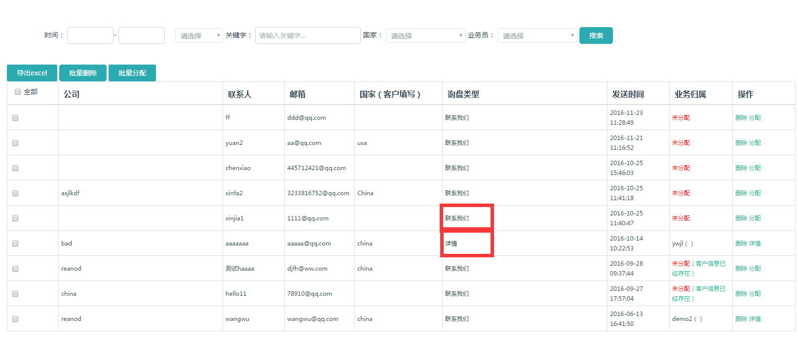

点击进入询盘管理界面，下图是询盘列表页，显示所有通过网址留言发送过来的询盘，包括联系我们页面和详情页。
列表页面显示询盘的简要信息，详情页面显示全部信息。

询盘列表页筛选按钮的使用：
1.时间段的筛选，选择时间区域就能够筛选出这个时间段的询盘信息。
2.关键词筛选，首先应该在请选择里边进行关键词类型选择，如公司、姓名、邮箱，然后输入想要查询的内容就会显示。
3.国家筛选，选择国家内的选项就能筛选出相对应的国家的询盘信息。
4.业务员筛选，前提是在每个询盘最后一栏的操作中已经对询盘进行分配，并且业务归属以显示姓名，就会筛选出分配给此业务员的所有询盘，否则显示未分配。
可以对单个进行筛选也可以所有项目选择进行精准筛选。
如业务归属显示此信息已存在，说明这个客户发送过询盘信息给公司。图3 业务分配
图4客户信息已经存在界面
导出excel：是对询盘信息能够导出进行管理。图5 导出询盘
批量删除：选定多个询盘进行删除。 分配：对询盘进行分配。点击分配进入如下界面，选择业务经理或业务员，填写备注，提交。也可在此删除询盘。图6分配界面
批量分配：选定多个询盘进行分配。会出现多个询盘分配界面下拉即可分配。